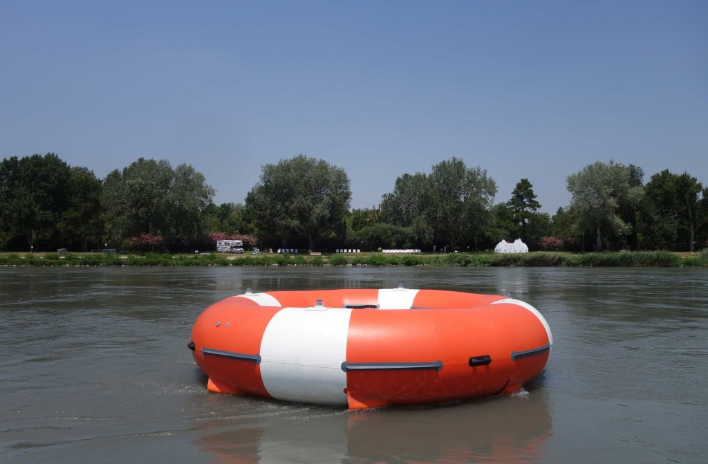
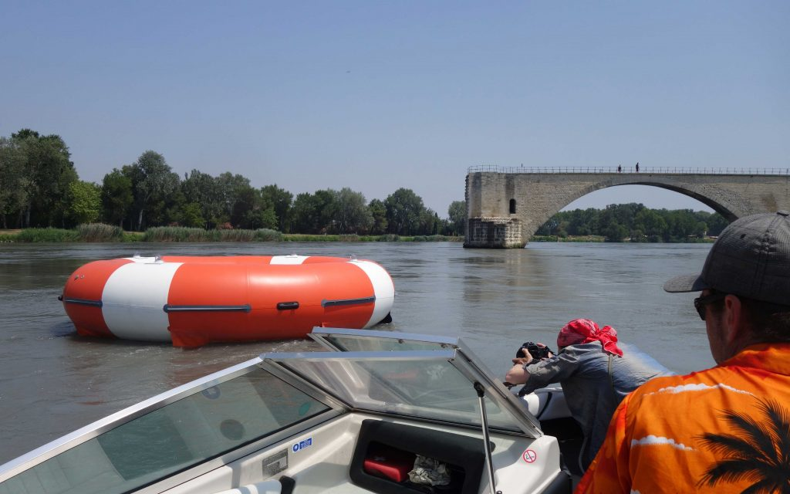
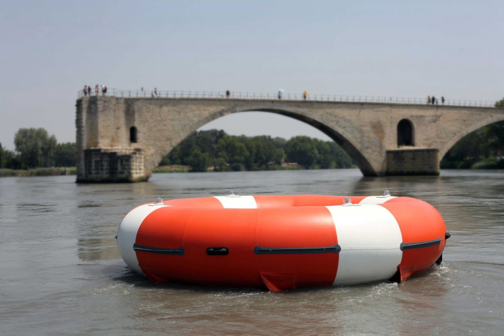

Since 2010, Bipolar Production has been working alongside artists who are sensitive to contemporary environmental and scientific issues.
In 2019, they developed the BigTorrent project, a travelling open-air exhibition on the banks of the Rhône and Saône rivers. Both an artistic project and an initiative to raise awareness of flood risk, BigTorrent offered local residents an unusual experience of the river.
On this occasion, we supported the creation of O.R.S. (Orbital River Station), a large-scale floating sculpture by the HeHe collective. The work interacts with the waterways on which it is presented. Equipped with sensors and connected to observation devices, the O.R.S. collects various data from the river: current speed, water quality, identification of pollutants. Highly visible, its shape and colour suggest an oversized lifebuoy, positioning it as an aid to riverside communities and an environmental warning system.
O.R.S. was presented to the public for the first time at the 2019 Avignon Festival.


